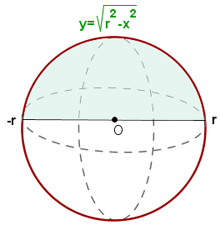

Ejercicios de volúmenes de funciones
Resolver
1Hallar el volumen engendrado por las superficies limitadas por las curvas y las rectas dadas al girar en torno al eje OX:
y = sen xx = 0x = π
2Calcular el volumen del cilindro engendrado por el rectángulo limitado por las rectas y = 2, x = 1 y x = 4, y el eje OX al girar alrededor de este eje.
3Hallar el volumen del tronco de cono engendrado por el trapecio que limita el eje de abscisas, la recta y = x + 2 y las coordenadas correspondientes a x = 4 y x = 10, al girar alrededor de OX.
4Calcular el volumen engendrado al girar alrededor del eje OX el recinto limitado por las gráficas de y = 2x − x2, y = −x + 2.
5Calcular el volumen engendrado por la rotación del área limitada por la parábola y2 = x y la recta x = 2, alrededor del eje OY.
6Calcular el volumen de la esfera de radio r.
7Hallar el volumen del elipsoide engendrado por la elipse 16x2 + 25y2 = 400, al girar:
1Alrededor de su eje mayor.
2Alrededor de su eje menor.
- 1
- 2
- 3
- 4
- 5
- 6
- 7
Ejercicio 1 resuelto
Hallar el volumen engendrado por las superficies limitadas por las curvas y las rectas dadas al girar en torno al eje OX:
y = sen xx = 0x = π
Ejercicio 2 resuelto
Calcular el volumen del cilindro engendrado por el rectángulo limitado por las rectas y = 2, x = 1 y x = 4, y el eje OX al girar alrededor de este eje.

Ejercicio 3 resuelto
Hallar el volumen del tronco de cono engendrado por el trapecio que limita el eje de abscisas, la recta y = x + 2 y las coordenadas correspondientes a x = 4 y x = 10, al girar alrededor de OX.
Ejercicio 4 resuelto
Calcular el volumen engendrado al girar alrededor del eje OX el recinto limitado por las gráficas de y = 2x − x2, y = −x + 2.
Puntos de intersección entre la parábola y la recta:

La parábola está por encima de la recta en el intervalo de integración.

Ejercicio 5 resuelto
Calcular el volumen engendrado por la rotación del área limitada por la parábola y2 = x y la recta x = 2, alrededor del eje OY.
Como gira alrededor del eje OY, aplicamos:

El volumen será la diferencia del engendrado por la recta y el engendrado por la parábola entre los extremos y = −4 e y = 4.

Como la parábola es simétrica con respecto al eje OX, el volumen es igual a dos veces el volumen engendrado entre y = 0 e y = 4.
Ejercicio 6 resuelto
Calcular el volumen de la esfera de radio r.
Partimos de la ecuación de la circunferencia x² + y² = r².
Girando un semicírculo en torno al eje de abscisas se obtiene una esfera.


Ejercicio 7 resuelto
Hallar el volumen del elipsoide engendrado por la elipse 16x2 + 25y2 = 400, al girar:
1Alrededor de su eje mayor.

Como la elipse es simétrica respecto de los dos ejes, el volumen es el doble del engendrado por la porción de elipse del primer cuadrante en ambos casos.
2Alrededor de su eje menor.

 Ejercicios
Ejercicios